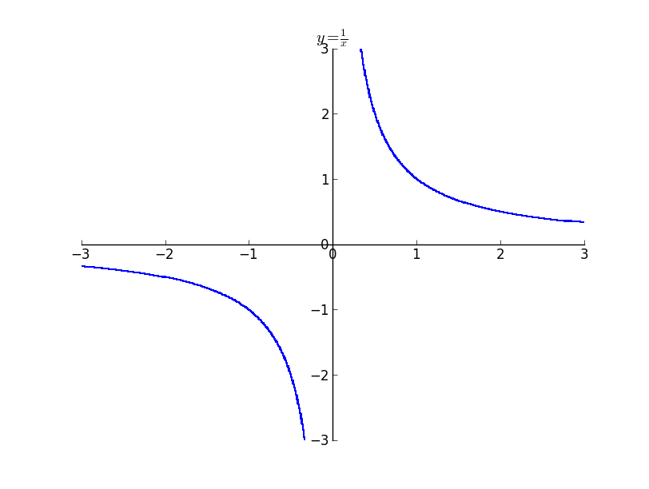
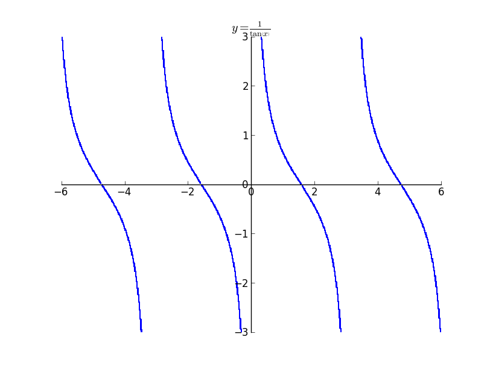
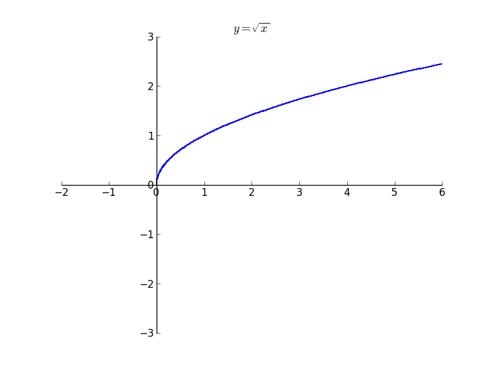
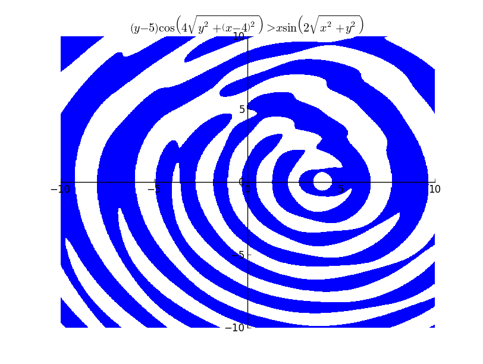
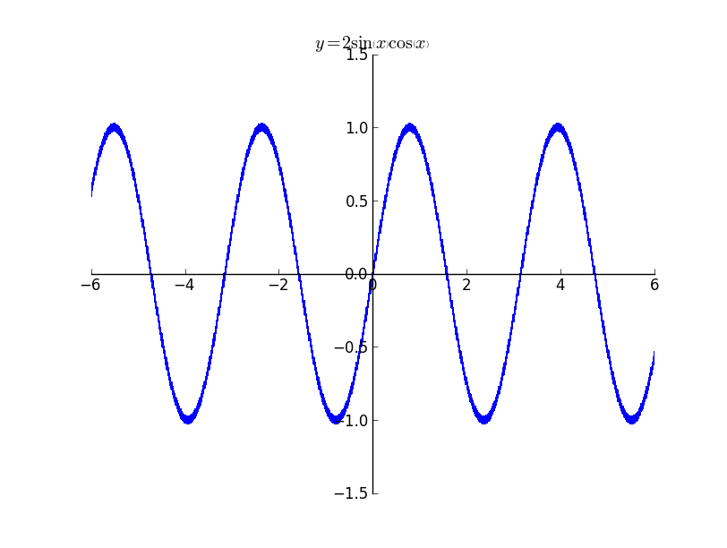
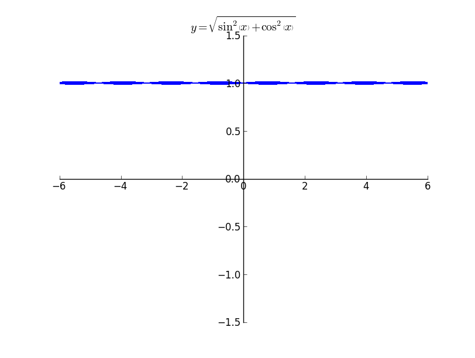

I have almost finished with the basic framework of implicit plotting based on interval arithmetic. The module implements both continuity tracking and domain tracking. Hence it does not plot points which are not there in the domain of the function. The functionalities are best illustrated by plots. There are also a couple of limitations that I encountered, which I think is difficult to avoid. I will illustrate both the functionality and the problems through plots.
 The above image illustrates a plot which does domain tracking and continuity tracking. It is not possible for interval arithmetic without tracking, to decide whether to draw the plots near zero. But with continuity tracking we get an accurate plot.

The above plot is that of
 The above plot illustrates how sqrt does not plot anything outside its domain. Even though it appears not that significant, it becomes significant when the huge expression is provided as the argument to the function.
Illustrations of more plots
Plot of
 The above plot took 19.26 seconds to render.
Problems
The problem with plots using interval arithmetic is that the errors increases with the length of the expression as the it takes the lowest and the uppermost bounds. It is possible to see the effect of errors in the following plot. It is possible to see the line thickens when the expression reaches a maximum or an minimum. This is due to the error creeping in. The interval becomes wide even at the smallest of the x interval.

It is better illustrated in the plot below. It is possible to see the width of the line increasing and then decreasing. 
Then next problem is that of rasterization. In order to avoid rasterization I tried using the Matplotlib's contourf function which implements the marching squares algorithm. Though it smoothens the curves, still there is fair bit of rasterization. The plot below is a zoomed version of
Presently the plotting function supports plotting of expressions containing cos, sin, tan, exp, log, sqrt, atan. Implementing more functions is fairly easy. I should be able to finish most of the expressions that can be implemented in the next week. I will look into implementing plotting implicit equations for expressions which cannot be implemented using interval arithmetic.
Comments !